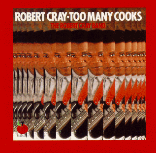

Too Many Cooks - Robert Cray

 Songs on the CD
Songs on the CD
-
Too Many Cooks ( W. Dixon)
-
The Score (D. Amy)
-
When THe Welfare Turns Its Back On You (S. Thompson - L. Weaver)
-
That's What I'll Do (R. Cray)
-
I'd Rather Be A Wino (D. Amy - R. Cray)
-
Who's Been Talkin' ( C. Burnett)
-
Sleeping In The Ground (S. Myers)
-
I'm Gonna Forget About You (O.V. Wright)
-
Nice As A Fool Can Be (R. Cray)
-
If You're Thinkin' What I'm Thinkin' (R. Cray)
This album is dedicated to Henry and Maggie Cray
When The Welfare Turns Its Back On You
I'm Gonna Forget About You
Too Many Cooks
Who's Been Talkin'
Robert Cray - Vocal & Guitar
Curtis Salgado - Harmonica - Vocal on "Gonna Forget"
Richard Cousins - Bass
David Stewart - Piano
Tom Murphy - Drums
David Li - Saxophones
Nolan Smith - Trumpet
Sleeping In The Ground
Nice As A Fool Can Be
If You're Thinkin' What I'm Thinkin'
The Score
That's What I'll Do
I'd Rather Be A Wino
Robert Cray - Vocal & Guitar
Nat Dove - Keyboards
Dennis Walker - Bass
Buster Jones - Drums
David Li - Saxophones
Nolan Smith - Trumpet
All Horn arrangements by David Li
Some Brief Credits:
© 1989 Tomato Records (Music Works) New York, NY
Distributed by Rhino Records Inc.,
10635 Santa Monica Blvd.,
Los Angeles, CA 80025
Back to my Cray page
Created: 8/4/95
By: rwhiffen
Mod: 8/22/99